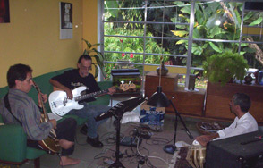
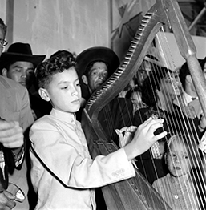
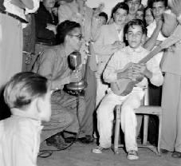
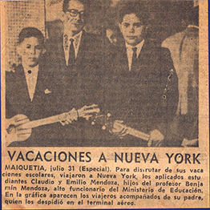
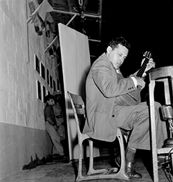
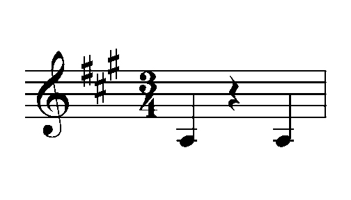
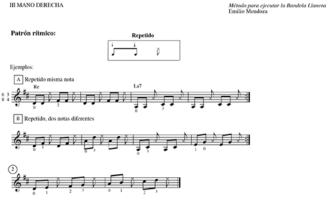

Joroponovo: Consideraciones
para la Adaptación del Joropo Venezolano a la
Guitarra
Emilio Mendoza
|
|
|
Introducción
El presente
escrito tiene la intención de delinear los diferentes aspectos
incorporados para generar música en la guitarra de cuerdas de
nylon con elementos provenientes del joropo venezolano,
especialmente del llanero y del joropo central, estilo musical
que se le ha bautizado con el nombre de "joroponovo". Esta
iniciativa creativa se ejecuta en una agrupación de cuarteto de
guitarra de 6 cuerdas de nylon, con guitarra 12 de cuerdas de
metal, bajo eléctrico y maracas, y su música se cristaliza en el
disco compacto Guarapiche
Blues de Ozono Jazz, 2020. La evolución instrumental
se ha llevado a cabo a través de la trayectoria del autor con el
grupo Ozono Jazz desde el año 2005, iniciándose tímidamente un
año antes con el grupo Akurima
en el tema Giros,
grabado en el
disco compacto Bajo un Cielo Toronjil (2005), donde
el autor realiza un solo en esa pieza con elementos de la
bandola llanera. El desarrollo del
joroponovo pretende establecer en la guitarra un sonido de arpa
y de bandola, a diferencia de la tradición de la guitarra del
joropo central, por respeto a un género que manejaba su
gran amigo el guitarrista tuyero Pedrito Díaz de San Antonio de
los Altos (ver artículo Manos de
Plomo...). Decidió buscar una
alternativa en la técnica de ejecución y de su resultado sonoro
así como de otros aspectos más relevantes como la agrupación
instrumental sin cuatro y sobretodo, en la composición de
estructuras armónicas
y formales complejas.
Ozono Jazz
y su
joroponovo
Este estilo utiliza la
técnica de arpegio de la guitarra clásica en imitación al sonido
de las arpas central y llanera, al usar el recurso de acordes
con cuerdas al aire, así como el golpe recio con plectro de la
técnica de ejecución "jalao", particular de la bandola de los
llanos del estado Barinas, Venezuela. El charrasqueo, repique,
frenado y rasgueado, así como los acordes en golpes secos de la
mano derecha –técnicas propias del cuatro venezolano– son
adoptados a la guitarra dentro de un lenguaje fuertemente
rítmico de compases compuestos (4/4. & 6/4), riqueza del
joropo tradicional, pero con una estructura armónica y formal
propia y compleja. El autor tuvo que consignar una guitarra de
cuerdas de nylon amplificable pero que no produjera
retroalimentación en el escenario, que tuviera una acción baja
para poder hacer todas las técnicas cuatrísticas de la mano
derecha, con diapasón angosto (1 7/8" máximo) para poder
adaptarle la técnica del jalao, y con afinación delicada en las
pisadas de las cuerdas 4, 5, 6 en los trastes superiores al XII,
que suenan junto a cuerdas al aire. La solución fue la serie
Multiac de las guitarras canadienses Godin de las cuales el
autor compró dos, la ACS-SA negra y la Nylon Duet Ambiance.
En cuarteto
Junto a la guitarra
principal de cuerdas de nylon, la guitarra 12 nos ofrece un
amplio espectro de versatilidad sonora y potencial rítmico, con
breves paseos por diversas culturas y el comentario continuo a
la composición en forma de parafraseos. Su sonido metálico con
doble ordenes en octavas provee la sonoridad típica del arpa
central, sobretodo si se toca con rasgueado lento del plectro,
así como el sonido charrasqueado y apagado (muted), casi
completamente percutivo que emplea el arpa central al tocar sus
bajos apagados con la mano izquierda. Puede sonar también a un
sitar y tampura de la India así como al estilo 'country &
blues' norteamericano. Sus armónicos son exquisitos y amplía el
rango del espectro de frecuencias disponible del cuarteto. El
bajo eléctrico atrapa como base la complejidad rítmica de sus
compañeros y establece la “onda” de cada parte, actuando muchas
veces como la voz solista y libre, así como en contrapunteo con
la guitarra. El sello final del joroponovo se corona con la
ejecución virtuosa de las maracas, junto al show visual en vivo
de sus movimientos, sin duda el rey de los instrumentos
venezolanos. Para información referencial sobre otras fusiones
pop-folk en Venezuela así como el uso del joropo en el ámbito de
la música popular venezolana, ver artículo "La
Utilización de Instrumentos Étnicos...", ya que hay
antecedentes muy importantes, sobretodo la producción de Vytas
Brenner en 1973. Sobre los conceptos de fusión, neofolklore,
apropiación, ver los artículos escritos para la Bloomsbury
Encyclopedia of Popular Music of the World.
¿Qué ritmo usar?
La conformación
planificada del grupo de música Ozono Jazz, luego de que el
autor había pasado por una serie de diferentes grupos anteriores de jazz
(ver Grupos), se
inició en enero 2005 en San Antonio de los Altos (ver FUNCIÓN). Se aplicó
un análisis retrospectivo de la práctica de ejecución musical
que se había llevado a cabo en múltiples toques en bares y
fiestas principalmente con la guitarra de 6 cuerdas de nylon
(Emilio) y la guitarra de 12 cuerdas de metal o bajo eléctrico
(Ike Lizardo), así como a veces con el acompañamiento de Ulises
Farías (luego Dha Maharaj) en el tablã de la India y Francisco
Issa en el saxo, (ver Conciertos).
Surgió la necesidad de definir un ritmo para el grupo, que en
gran medida definiría el estilo y segmento de la música popular
en donde se ubicaría al grupo por nacer Ozono.

Primer ensayo de Ozono, La Perla, San Antonio, 01-2005
Aparece un joropo recio
Una de las primeras piezas
que nos atrapó la atención, no solo de nosotros los músicos en
disfrute al tocar en vivo sino también del público que nos
escuchaba, fue la composición Espirales
que utiliza la técnica del "jalao" típica de la bandola llanera
de Venezuela. Quizás fue por su sonido con sabor venezolano
dentro de un ambiente de jazz de locales nocturnos, y por la
novedad de oír una guitarra "bandoleada", que sonaba a
joropo llanero pero sin estar tocando un joropo...
Esta pieza es un joropo "recio" en términos llaneros, y fue
premeditadamente construida de elementos "dulces" y atractivos
en su armonía. Ver Espirales
para más detalles sobre estos procedimientos.
Nos llamó la atención el ritmo del joropo que tradicionalmente
existe en toda Venezuela, con diferencias locales por supuesto,
que conlleva una actividad actual viva y estable. Al contrario
de muchas manifestaciones tradicionales en el país que están en
franco declive y que son sustituidas por músicas grabadas y externas
a su entorno cultural local y extendido, el joropo
existe, vivo y persistente. La manifestación del joropo
principalmente en su baile de fines de semana toma lugar todo el
año y no está limitada a vínculos o temporadas del calendario
religioso cristiano como la mayoría de la música tradicional
venezolana. Es decir, el joropo es al mismo tiempo una música
tradicional portador de una fuerte identidad venezolana en todo
el país a pesar de sus diferentes zonas geográficas y
climáticas, y es también una música perteneciente a la industria
y comercio mediático musical, siendo más típica en la zona de
los llanos, venezolanos como colombianos. El autor tardó
bastante tiempo en lograr la adaptación del jalao del dedo medio
de la mano derecha al espacio de seis cuerdas para tocar bandoleado en Espirales,
pero como se explicará más tarde, esa dificultad hizo posible
también dar tiempo a desarrollar la técnica del arpegio de la
mano derecha para tocar al estilo "arpeado".
¿Cómo se toca joropo en la guitarra?
Podemos resumir ciertos aspectos necesarios que el músico debe
abordar para tocar joropo en la guitarra, ejemplarizando con la
trayectoria del autor y cómo él fue logrando dominar estos
requisitos. Es una aproximación biográfica por la asombrosa
coincidencia de eventos y oportunidades que, vistos en
retrospectiva, todos colaboraron en desembocar en este estilo
nuevo, a pesar de que el autor no tenía ninguna idea ni
pre-concepto hacia dónde se dirigía ni del resultado final a que
este desarrollo de muchos años llevaría.
La estructura rítmica del joropo se constituye de varios
pulsos posibles que aparecen simultáneamente, no todos son
amistosos entre si, es decir, no coinciden, y su encanto surge
por esta contradicción entre los diferentes pulsos: tenemos
3/8 en las maracas, cuya negra con puntillo luego se agrupa en
dos pulsos para formar el 2/4. en manos del cuatro que a su
vez también juega en darnos el 3/4 haciendo un 2 vs 3. El
arpa, bandola o guitarra juegan con estas contradicciones
haciendo los tres (3/8, 2/4. y 3/4), además de un 3/2
adicional. El músico eventualmente puede pasar de una a otra
de estas capas de diferentes pulsos sin problemas pero este sentido
no es fácil de dominar con naturalidad y la mejor forma de
asentarlo es bailándolo
dentro de su contexto cultural así como tocando
joropo tradicional u otra música con la misma estructura
rítmica, con acompañantes o en conjuntos.
¿Qué se necesita?
- Sentir musicalmente la complejidad
rítmica del joropo, a través del contexto y la práctica del
baile
- Sentir
musicalmente la complejidad rítmica del joropo, a través
de la práctica instrumental tradicional: Cuatro, maracas,
bandola, arpa, percusión
- Entrenarse en la guitarra en los
aspectos técnicos siguientes:
- La Mano Derecha en arpegios p, i, m, a
- La Mano Derecha en el "jalao" con el dedo medio
- La Mano Izquierda en arpegios de acordes M6, m7, V7, ø7, o7
1. Sentir el joropo
- Bailar
Por lo tanto, se aconseja ir a bailar muchas veces joropo
central o tuyero toda la noche en los bares o restaurantes que
lo ofrecen los fines de semana en los valles del Tuy, Altos
Mirandinos y cercanías de Caracas. El autor tenía un curso de
Estudios Generales en la Universidad Simón Bolívar, (1998-2013),
llamado Folklore Musical de Venezuela (CSX-623),
el cual incluía entrenarse a bailar en la última media hora de
la clase y salir todos a bailar unas tres veces en el trimestre
a un joropo de verdad. También se realizaba la serie de joropos
tocados y bailados, "El Joropo en la Simón" dos por trimestre en
el auditorio del campus. Al final del trimestre, el autor hacía
una fiesta en su casa con todos los alumnos, una parrilla, para
la cual se contrataba a unos joroperos y además se terminaba en
descargas y jam-sessions de los amigos
roqueros y jazzistas, amigos de la zona. Esta tradición era
parte de la vida en los Altos Mirandinos, donde está ubicado San
Antonio de los Altos, conocida como las "peñas", y la madre
del autor, Sarita,
tiene fotografías del año 1956 donde se aprecia a muchachos
jóvenes tocando en su casa el arpa tuyera, prácticas que después
de Pedrito Díaz (ver arriba), no volvieron a aparecer. Existen
restaurantes llamados 'carne en varas' a la orilla del camino o
de la autopista, donde incluyen una agrupación de joropo llanero
para amenizar la comida o bebida, usualmente amplificados los instrumentos en
exceso, pero no constituye una práctica de
baile sino que tienen la función de amenizar la comida,
contrario a la práctica de los tuyeros donde la gente acude
simplemente a bailar y se puede bailar en pareja con cualquier
persona que esté sentada. El autor consideró que él formaba
parte intrínseca de una tradición de guitarra tuyera en San Antonio de
los Altos, que se había roto con la muerte de Pedrito Díaz y por
supuesto con el advenimiento gradual del rock desde los años 70
que formó otra tradición musical paralela muy fuerte en esa zona
con PTT Lizardo a la cabeza (ver artículo sobre la música en
San Antonio y artículo
y web sobre PTT).
 
Joropo en San Antonio. Sarita,
1956.
Pedrito Díaz en concurso junto a Benjamín Mendoza. Sarita,
1956
2. Sentir
el joropo - Tocar
Cuatro
El entrenamiento musical de los niños en Venezuela en los años
cincuenta casi siempre incluía las clases de cuatro en las
escuelas o en la comunidad. El autor recibió desde pequeño
instrucción del cuatro y en Navidades empezó a acompañar
aguinaldos y gaitas en las parrandas navideñas que visitaban
cada casa en las madrugadas. Todas las casas contaban siempre
con un cuatro, tradición que no se ha continuado más hoy en día,
lamentablemente, así como tampoco las clases de cuatro, quizás
por el auge de las orquestas sinfónicas de El Sistema a pesar de
que cambiaron su estrategia últimamente para incluir los
instrumentos tradicionales. El profesor Quero lo instruyó con el
joropo, el aguinaldo, el merengue caraqueño y el nuevo ritmo
inventado por Hugo Blanco, ya famoso en los sesenta con Moliendo
Café, el ritmo orquídea. En un viaje que hace el autor con
su hermano Claudio en julio 1964, a un campamento vacacional en
Boston, MA, EEUU, se fotografían ambos en el aeropuerto con su
padre Benjamín y cada uno con un cuatro en la mano. Para
el autor, al no hablar ni entender nada de inglés, el cuatro que
llevó consigo en este viaje se convirtió en su único amigo con
quien poder comunicarse y desde sus 10 años, la música ejecutada
se convirtió en su acompañante inseparable de por vida, ya
componiendo piezas con el cuatro al no poder entender ni hablar
con nadie en ese viaje. En 1973 toma un curso de extensión sobre
el Cuatro Solista en la Universidad Simón Bolívar, dictado por
el famoso Freddy Reyna, viejo amigo de la casa de la familia en
San Antonio.
 
El Nacional,
31-07-1964
Freddy
Reyna tocando en la Plaza Bolívar de San Antonio. Sarita, 1956
Tocar Maracas
Al partir para Alemania en 1976 para estudiar el Diplom in
Komposition en la escuela superior de música Robert
Schumann Institut, Düsseldorf, el autor vivió en una residencia
de estudiantes de medicina en 114 Strümpelstraße, Düsseldorf. Se
había llevado consigo la guitarra, un cuatro y un par de
maracas, así como varios cassettes de música venezolana, en su
mayoría joropos. Practicaba todo el día el cuatro y
especialmente las maracas tocando junto a las grabaciones de
joropos llaneros en su pequeño cuarto encerrado y empezó a
analizar la rítmica de la bandola y del joropo mientras mantenía
el toque básico de maracas. Resultado de esta experiencia en la
compresión analítica y en experiencia práctica del ritmo del
joropo, fue su composición Arsis, 1978, (Flt, 2 Pfte, 2
Perc., Cb), que nunca se ha ejecutado, y es una composición
completamente basada en un pensamiento rítmico en esencia. Fue
escogida para el Festival Días Mundiales de la Música de la
Sociedad Internacional de Música Contemporánea (ISCM) en Atenas
en 1980, pero no se pudo estrenar por confusión de los músicos
ejecutantes en el aspecto rítmico... Por su puesto, para todas
las fiestas de los amigos y amigas
en Alemania el autor era invitado para que armara la pachanga
tocando cuatro, maracas y cantara, luego añadiendo los tambores
africanos que se pusieron de moda por las clases impartidas en
Die Werkstatt en Düsseldorf.
Tocar Percusión - Agbadza, Ghana
Se aconseja conocer y tocar percusión de otras culturas que
emplean música con la existencia de varios pulsos antagónicos
simultáneos como el joropo. En el caso del autor, esto lo pudo
realizar a partir del año 1977, al meterse en clases regulares
de percusión y danza africana en Die Werkstatt, Düsseldorf, con
el Master
Drummer Mustapha Tettey Addy, así como con Aja, y luego con
Rashid Omoniyi Okonfo. Al graduarse de sus estudios académicos
en la escuela superior de música en julio de 1981, culminó
con la experiencia de cuatro meses
(sept - dic, 1981) en una estadía en Kokrobitey, Ghana, en donde
estuvo intensamente tocando percusión africana (campanas,
calabash y tambores). Practicaba todos los días danza africana
con diferentes ritmos pero especialmente con Kpanlogo (binario)
y Agbadza (ternario), que está en 4/4. + 6/4. Tocó además el
cuatro con ritmos venezolanos en los Wake-Keeping o
velorios de varios días seguidos que realizaban en Ghana
mientras el muerto se descongelaba. Esta experiencia le sirvió
para vislumbrar la rítmica basada en pulso, transcribir todos
los ritmos que le enseñaba el Master Drummer Addy, de lo cual
produjo posteriormente el Sistema
Modular para Lectura y Transcripción Rítmica y, por
supuesto, obtuvo un conocimiento profundo de lo que se trataba
el ritmo y su relación al pulso, enseñanza completamente ausente
en nuestra formación musical tradicional académica. En su estadía posterior en el cargo de Profesor
Asistente en la Crane School of Music, State University of New
York (SUNY-Potsdam), 1991-1995, impartió clases de Teoría Rítmica
a nivel de
Licenciatura y luego, en el postgrado de la
Universidad Central de Venezuela en 1997-1998, impartió un curso similar
a nivel de Maestría (ver detalles en su CV completo).
Tocar Bandola llanera
A su regreso de Alemania y Ghana, se desempeñó como fundador, director y ejecutante en la
ODILA - Orquesta de
Instrumentos Latinoamericanos (1982-1987), con composiciones
de música con ritmos venezolanos además de ejecución de música
tradicional de toda Latinoamérica y ejecutando la bandola
llanera en cientos de conciertos. Este instrumento lo aprendió
en 1982 en tres meses de cursos semanales en la Escuela La
Clavija, Caracas,
con Saúl Vera y luego, por haber aprendido su ejecución
rápidamente, tuvo que enseñarla a los integrantes de la ODILA
debido al hecho de que Saúl Vera abandonó el proyecto a pocos
meses de haberse iniciado por falta de pago (ver el desarrollo
de la ODILA en el artículo
sobre instrumentos étnicos). Para este propósito se vio
obligado a desarrollar en 1982 un método de aprendizaje de la
Bandola Llanera debido al hecho que el que había utilizado
para aprender, el método de Saúl Vera, lo había criticado
fuertemente, lo que eventualmente los alejó como colegas. A
pesar de ésta posición en contra de su método, Saúl lo asignó
suplente varias veces en su cátedra de Bandola en la Fundación
Bigott. La Bandola Llanera se había convertido para el autor en una
obsesión desbordada, llevándola en el carro, en
autobuses, en paseos para la playa, en reuniones familiares y
de amigos, y le asignaron el apodo "Emilio y su Bandola." Las
novias eventualmente hicieron un boicot y le prohibieron a él
y a su hermano Claudio, llevar la bandola y el cuatro a los
paseos porque no le dedicaban tiempo a ellas ¡al estar tocando
joropos sin cesar, en la arena, en el carro, en el
restaurante...!. Con esta experiencia pudo desarrollar la
técnica del "jalao" en la mano derecha, técnica muy especial
de este instrumento.
Con la ODILA, por supuesto, ejecutó mucha música de rítmica
parecida al joropo, tanto de Venezuela como de Latinoamérica,
ejecutando joropos en la bandola, maracas, guitarra, así como
tocando la percusión y tambores, sea como solista o acompañando
a otros. Juntó esta actividad con el Ballet Coreoarte y la José
Limón Dance Company con resultados de composiciones con bandola
llanera, como la ancestral Memorias
de la coreografía El Ultimo
Canto en un trabajo en conjunto con el coreógrafo Carlos
Orta. En 1984 le grabaron un video tocando "Los Diamantes" en la
bandola en una fiesta durante la gira del Ballet Coreoarte de
1984 por Alemania al que fue
invitado como músico.
Paralelamente a la ODILA y Coreoarte, ejecutó cuatro, guitarra y
bandola llanera en la agrupación Key Yumei (1983-1986), con
Alfredo Rugeles de director, con quienes estrenó su primera
pieza para bandola llanera y acompañamiento, Marisela, grabada
en un cassette La Voz del Canto Latinoamericano,
editado por el grupo en 1986. En 1988, ya en Washington, DC,
estudiando el doctorado, conforma una agrupación con arpa,
bandola+cuatro y bajo, llamada Little Venice,
presentandose en unos cuantos conciertos en el Smithsonian.
Posteriormente, en 2004-2006 en Venezuela, realizó varios
conciertos y un programa para la televisión con un trío llamado
Guama Eléctrica,
con Bandola amplificada, Cuatro solista (Elías Torres) y
guitarra (Gerardo Osal), en San Antonio.
3. Entrenamiento Técnico en la Guitarra
Es
altamente aconsejable llevar a cabo el entrenamiento de
técnica instrumental para los siguientes aspectos específicos
de la guitarra, a saber:
- Arpegios de la mano derecha con p, i,
m, a
- Técnica del
"jalao" en la mano derecha con plectro y dedo medio
- Arpegios en la mano izquierda para los
acordes M6, m7, V7, ø7, o7
Debe referirse al método de guitarra con el nombre de "Los Patrones de Emilio", que
conlleva una práctica rutinaria fija que sirve a ambas manos y
para lograr desarrollar una técnica sólida de ejecución, que,
como vamos a ver en adelante, es imprescindible para tocar el
joropo a la velocidad que se exige para tener el goce típico de
esta música. Se necesita también desarrollar arpegios de acordes
en la mano izquierda de las armonías comunes para poder hacer el
toque del jalao debidamente, con el cual se hacen arpegios de
acordes todo el tiempo en la bandola con el ritmo de joropo.
Afortunadamente, esta técnica la venía desarrollando ya desde
hace mucho tiempo como parte del método de guitarra y no fue
difícil realizar la adaptación para la guitarra. Ver el método Los Patrones de Emilio
también para los patrones de arpegios de acordes.
El autor había tomado varios cursos de
joropo tuyero para la guitarra incluyendo a Juan Peña, además de
tocar con Pedrito Díaz a quien le pagaba las clases con cuerdas
nuevas de guitarra, así como pudo tocar con facilidad el
Seis por Derecho y el Pasaje Aragüeño de Antonio
Lauro, entendiendo que la técnica de la guitarra tuyera era muy
diferente a la de la guitarra clásica donde se utilizan los
cuatro dedos de la mano derecha (p-i-m-a) cuando en la guitarra
tuyera, en general, se utiliza sólo el pulgar e índice, y por lo
tanto tenía que experimentar y desarrollar la música dentro de
dos ambientes: Joropo Arpegiado y Joropo Bandoleado.
Joropo Arpegiado
Es necesario desarrollar
la técnica de arpegios con la mano derecha p-i-m-a con
suficiente velocidad. En la pieza Encanto del CD
Guarapiche Blues
se muestra un comienzo en bossa lento y una ruptura del ritmo de
joropo cerca del final, que cambia de una blanca con puntillo a
74 ppm, a un 4/4 a 68 ppm en ritmo de bossa. Lo que sucedió
inicialmente fue que la mano derecha se trancaba al tocar en
vivo a esa velocidad (74 ppm) y se cambiaba de pulso de blanca
con puntillo (4/2.) a negra en 4/4 para descansar la mano. Lo
que eventualmente llevó a incorporar este recurso de descanso
dentro de la estructura de la composición, ¡un joropo con bossa!
Para grabar la pieza a esa velocidad fue necesario practicar por
varias semanas para tener la mano en forma. Por lo tanto, el
guitarrista debe tener una práctica diaria de escalas con a-m-i
para tener los dedos preparados para arpegios rápidos y
sostenidos de la mano derecha. Se suma a esta técnica, el
conocimiento de tocar cuatro con charrasqueo, frenado, rasgueado
y repiques, que se usan adicionalmente a los arpegios, y el
conocimiento de poder acompañar por oído los joropos
tradicionales. Este conocimiento es altamente importante y se
forma escuchando y tocando. Para conocer el joropo tradicional y
poder acompañar sus varios tipos o especies que lo constituyen
(unos 21), se debe practicar con unos joroperos cercanos que los
sepan todos y se recomienda altamente leer en detalle la tesis
de maestría de Jean Carlos González Queipo, "Transcripción y
Descripción de 21 Especies del Joropo Llanero Venezolano." Esta
tesis la inició Queipo con el autor como tutor y luego la
terminó con otro tutor. Contiene todas las referencias más
importantes para este tema, por lo tanto no hace falta
repetirlas en este escrito, así como las progresiones armónicas
de todas las 21 especies de joropos. Por favor solicitarla
directamente a su autor al correo jeanca72@gmail.com
Existe una tradición de
interpretación en la guitarra del joropo venezolano en sus
diferentes variantes regionales (central, llanero, oriental).
Igualmente encontramos ciertas composiciones para guitarra con
características del joropo, como el Seis por Derecho y
el Pasaje Aragüeño de Antonio Lauro, gran compositor
de música para guitarra, más conocido por sus "Valses
Venezolanos." En la serie Colección de compositores
venezolanos para guitarra publicada por la Fundación
Vicente Emilio Sojo/CONAC, 1998, y editada por Alejandro
Bruzual, se encuentra un cuerpo de composiciones y arreglos
para guitarra con ritmos venezolanos incluyendo al joropo y
formó una fuente valiosa de referencia para el autor.
La tradición más pronunciada de joropo y
guitarra en la actualidad en el país es la de la guitarra del
joropo central pero hay muy pocos joropos bailables con
guitarra en comparación con la cantidad de bailes con arpa. En
algunas poblaciones como en Guarenas-Guatire, hay un
desarrollo hacia el uso de la guitarra eléctrica amplificada y
acompañamiento de bajo eléctrico, batería y el baile en
formación tipo Bollywood, como en el caso de "Los
Metralletas".
Examinando la literatura mencionada, así
como realizando transcripciones de ejecutantes de la guitarra
central y su propia inventiva instrumental ya teniendo el
sentido del joropo dentro de su mundo musical, el autor ha
producido un grupo de patrones básicos de joropo en la
guitarra, como recurso para la aproximación del ejecutante y
estudioso de la guitarra a este género de música tradicional
venezolana, con ejemplos musicales y videos de los patrones.
Las piezas que utilizan esta técnica son: Encanto, Sol de Mañana, Desamores, Añoranza, Guarapiche Blues, Sentir del Viento,
Danzas de Vida. Se
consideraron ciertos aspectos específicos en esta adaptación,
que se discuten a continuación:
El bajo apagado
Tanto en la
música de joropo central para arpa como para guitarra, el bajo
en figuras de 3/4 y 3/2 se toca apagado y bien seco en
ciertas partes de la música, es decir, suena como si fuera un
membranófono más que un instrumento de cuerda con altura
definida. El apagamiento (muted) es tan corto que casi no
se percibe la altura de la nota emitida, convirtiéndose en una
línea principalmente rítmica a pesar de que las cuerdas (en el
arpa) y/o pisadas (en la guitarra), están basadas en la tónica
del acorde con su cuarta por debajo como arpegio adicional del
mismo acorde, o de la dominante de la tonalidad. El rol de este
bajo es producir la base en 3/4, usualmente con el primer pulso
marcado y su anacruza del tercer tiempo (ver abajo). Para
realizar este bajo apagado de características percutivas en la
guitarra es necesario ejecutar con la mano derecha apagando las
cuerdas con la parte inferior del músculo del pulgar, técnica
que contradice la posición acostumbrada en la tradición de la
guitarra clásica, en la cual la mano derecha se mantiene en
contacto con las cuerdas sólo con las puntas de los dedos. Si se
adopta la técnica de apagado en la mano derecha, el guitarrista
con entrenamiento clásico no podrá tocar con la agilidad
acostumbrada. Otra solución a este problema es apagar las
cuerdas con algún dedo sobrante de la mano izquierda, como es el
caso usualmente del dedo cuatro, tomando gran cuidado de no
producir armónicos lo cual es bastante difícil porque las
cuerdas emiten armónicos en casi todas las posiciones, sobretodo
en las cuerdas entorchadas. Esta solución además restringe el
uso de un dedo de la mano izquierda y de la música que se pueda
tocar con tres dedos y no cuatro. En la partitura Pasaje
Aragüeño de Antonio Lauro, cuya caracterización es
evidente como música del joropo central, no se menciona nada al
respecto y el autor ha escuchado que ha sido tocado siempre con
los bajos abiertos y sonantes, resultando un sonido
desnaturalizado de lo que realmente es el sonido del joropo
central tradicional. La solución del autor es no apagar los
bajos ya que le imprimen mucha sonoridad a la guitarra por el
hecho de que las cuerdas 4, 5, y 6 tienen más duración al
ejecutarlas que las 1, 2, y 3. Por otro lado, se puede resolver
este problema al ejecutar este tipo de música junto a otros
instrumentos que suplan este efecto del bajo apagado, como puede
ser una batería con su bombo en el ritmo mencionado o un bajo
eléctrico o contrabajo en pizzicato para aliviar a la guitarra
de esta función. Se observó en la tradición de joropo central en
la guitarra, que este sonido es quizás el más importante y que
el guitarrista lo ejecuta apagado y utiliza sólo un dedo
adicional, usualmente el índice de la mano derecha para realizar
algún relleno o alguna melodía, y por lo tanto no se realizan
arpegios más elaborados con los otros dedos de la mano derecha.

Tempo
El tempo del
joropo central y llanero, cuando no es pasaje, puede variar
desde 136-156 ppm o más, la negra con puntillo (en 2/4.), o
204-210 la negra (en 3/4). La ejecución de este tempo en la
guitarra disminuye la aplicación de arpegios más sofisticados de
la mano derecha y por lo tanto se explica el uso de la mano
derecha arriba mencionado, con su bordoneo apagado con algún
relleno del índice. Por lo tanto, hay dos soluciones para tocar
joropo en la guitarra, o se simplifica el toque o se baja el
tempo para permitir arpegios elaborados, o el ejecutante se
enfoca en subir la velocidad de su ejecución con entrenamiento
duro. El autor decidió bajar el tempo y aplicar el desarrollo
gradual de la técnica para alcanzar el tempo real del joropo. No
obstante, a menor tempo (124 ppm por ejemplo de negra con
puntillo en ternario), el resultado es atractivo sin tanta
exigencia técnica, y el autor puede también sugerir mantener
este tipo de tempo más lento, no tan bailable como el tempo real
utilizado en la tradición que es el mejor para esta función, y
que se desarrolle otro aspecto o género del joropo en la
guitarra, más pausado, más cool. Si no, el joropo como
se está proponiendo sólo podrá ser ejecutado por muy pocos
guitarristas que alcancen estas velocidades. Para grabar Encanto con blanca
con puntillo a 74 ppm, el autor tuvo que entrenarse varias
semanas. Para el caso de la ejecución bandoleada con el plectro
y el jalao, no hay ninguna dificultad para tocar a niveles muy
rápidos de
tempi.
Sonoridad
La sonoridad
armónica del arpa y en especial del arpa central con algunas
cuerdas de metal, no se refleja en la guitarra con la técnica
tradicional. Para lograr más notas sonando y cuerdas sonando por
más tiempo, se propone configurar la tonalidad para tocar en la
guitarra de acuerdo a la posibilidad de tener cuerdas al aire
que estén sonando continuamente, y tocar acordes y posiciones de
la mano izquierda en la guitarra que permitan mantener algunas
cuerdas al aire siempre sonando. Esta digitación es más difícil
por que se deben mantener los dedos de la mano izquierda bien
paraditos, verticales, para no rozar las cuerdas adyacentes en
función de que se mantengan sonando ni tampoco hacer barras,
pero le otorga un volumen y sonoridad a la guitarra parecidos al
esplendor armónico del arpa. La configuración de las tonalidades
es en función de que estas cuerdas al aire, como la 1, 2, o 3,
(E, B y G) no choquen en disonancia con la tonalidad de la
pieza, es decir, tocar en las tonalidades de D, A, E, G, C
principalmente, y ya en E mayor se debe tener cuidado de ni
rozar la cuerda 4 (D) ni la 3 (G). Otra posibilidad que no se ha
probado todavía pero no se descarta como opción a desarrollarse,
es la utilización de cambios de afinación de las cuerdas, de la
afinación tradicional. Por último, algún patch de efectos como
un toquecito de Chorus y Reverb así como un toque de compresión
ayuda a tener un sonido más amplio y duradero en la guitarra.
Joropo Bandoleado
El método de bandola
se generó porque Saúl Vera como profesor de la ODILA para la
Bandola llanera, discontinuó sus clases de bandola en el
Conservatorio de la ONJV en El Paraíso, Caracas, en octubre,
1982. Su queja era justificada porque no se le estaba
pagando nada a pesar de estar dando clases varios meses, ya
que el presupuesto asignado por FUNDEF/CONAC/ONJV al
proyecto ODILA, no se hizo realidad sino hasta que toda la
ODILA amenazó a José Antonio Abreu, presidente de la ONJV,
de boicotear el evento de celebración del Bicentenario del
Natalicio de Bolívar y no tocar en la noche del estreno de
la ODILA el 12 de febrero, 1983, con presencia del
Presidente y todo el gobierno para el Día de la
Juventud. En esa misma noche, justo antes del
concierto, Abreu apareció con el chequecito en la mano y se
procedió con un concierto espectacular. A pesar de tener al
fin el financiamiento para el proyecto ODILA, ya Saúl se
había ido y el autor tuvo entonces que dar las clases de
bandola en la ODILA. Como no estaba de acuerdo con el método
de Saul Vera, realizó el presente Método para ejecutar
la Bandola Llanera aún por publicarse, donde
se expone toda la técnica del jalao tanto para la bandola
como para la guitarra. Ejemplo para tocar en la Bandola:

El
autor inició la experimentación de tocar el jalao en la
guitarra pero con una Les Paul Deluxe dorada '72, guitarra
eléctrica de cuerdas de metal muy delgadas. El resultado de
cada toque era una uña rota, la del dedo medio, y/o la
cuerda 1 rota. Por tal razón se emigró a la guitarra de
cuerdas de nylon, así como este hecho hizo también posible
el desarrollo de los arpegios de la mano derecha, que si se
usara la guitarra de cuerdas de metal, se destrozarían todas
las uñas de la mano derecha. Para más información ver
el Método de
Bandola. Las piezas con esta técnica incluyen Espirales, Guarapiche Blues y
un pedacito en el medio de Terruño, así
como el final de Giros
con Akurima.
Arpegios de Acordes en la Mano Izquierda
La ejecución de joropo en la Bandola
Llanera se basa en una serie de patrones rítmicos que se
ejecutan con la mano derecha con el plectro y el jalao del
dedo medio, haciendo arpegios de acordes en la mano
izquierda. Por lo tanto, es imprescindible tener asentados
en la técnica de la mano izquierda los arpegios de acordes M6, m7, V7, ø7, o7,
arrancando con los dedos 1, 2 o 4, y en lo posible
practicar los patrones de la bandola usando estos arpegios
de acordes, con acompañamiento del cuatro. Para estos
patrones de arpegios de acordes en la guitarra, ver Los Patrones de Emilio
vol 2.
Literatura de Joroponovos
Otra manera de emprender el aprendizaje del joroponovo en la
guitarra clásica es sacar textualmente las piezas de Ozono a
través de su partitura y/o video lento de su ejecución,
material que en los próximos meses se publicará en la página
de cada pieza, especialmente de Encanto
(joropo arpeado) y Espirales
(joropo bandoleado). En estas piezas se incluye casi todos
los recursos mencionados, organizados para generar unas
composiciones atractivas e interesantes.
{kind=link}
{kind=link}
{kind=link}